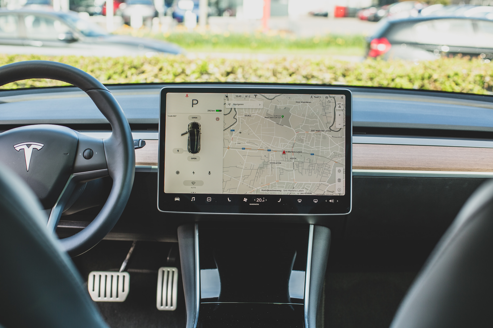

Perkembangan Teknologi
Dari Masa Ke Masa

Dengan waktu yang cukup singkat, saat ini teknologi sudah meledak di pasaran dan penggunaannya meningkat secara drastis. Untuk memahami bagaimana manusia mulai meninggalkan zaman tanpa teknologi hingga kini ada teknologi tidak butuh waktu lama loh, semua berproses dengan cepat.

Perkembangan teknologi dari masa ke masa terus meningkat pesat. Di era digital seperti saat ini sangat mustahil bagi manusia untuk hidup tanpa adanya teknologi. Bahkan sekarang ini, hal sederhana saja seperti komunikasi antar keluarga sudah menggunakan aplikasi melalui smartphone.
Semua teknologi lahir dengan sebuah tujuan. Setiap perkembangan dari teknologi terbaru menggabungkan teknologi yang sudah ada untuk menciptakan sesuatu yang lebih baik dari sebelumnya. Hal tersebut terus berlangsung hingga saat ini.
Dengan berjalan cukup cepat dari evolusi teknologi, saat ini banyak orang yang berjuang untuk mengikuti kemajuan teknologi tersebut agar tidak ketinggalan. Melihat kembali ke tahun 1990-an dimana internet merupakan salah satu komoditas baru yang belum dapat diakses oleh semua orang.
Untungnya karena semakin banyak orang yang menemukan nilai dan manfaat dari adanya internet, Saat ini teknologi dikembangkan sedemikian rupa sehingga bisa menjadi meningkat seperti saat ini.